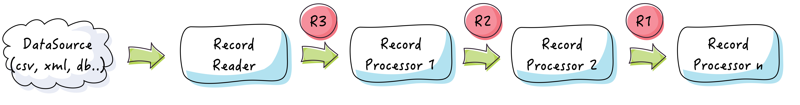
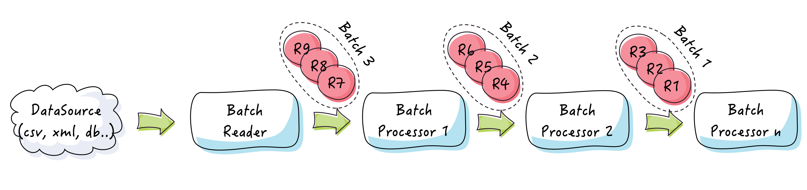

Architecture
Framework overview
The next figure describes Easy Batch from a bird eye view:

Easy Batch is all about processing a data source in batch mode:
- First, you need to configure a job
- Then, you run your job
- And finally you get an execution report and a log file about the job run
The Record abstraction
Easy Batch streams data record by record from the data source. Depending on the data source type, a record can be a line in a flat file, a tag in a XML file, a row in a database table, a file in a folder, etc.
Here are some examples of records as seen by Easy Batch:

public interface Record<P> {
/** Return the record header */
Header getHeader();
/** Return the record payload */
P getPayload();
}The generic Record interface is an abstraction of all record types.
A record has a header and a payload:
- The header contains various metadata about the record such as the data source from which the record has been read, its physical number, creation date, etc..
- The payload is the raw content of the record which is generic since its depends on the data source type. The record payload can be of any type, so that it can represent any type of input data.
Records are submitted to a processing pipeline where each record is piped out from one processor to the next one:

Record type can change from one processor to another.
The Batch abstraction
In the batch processing terminology, a batch is a set of records:
This operating environment is termed as "batch processing" because the input data are collected into batches or sets of records and each batch is processed as a unit - Wikipedia
A set of records in Easy Batch is represented by the Batch class. Batches are processed as a unit:

Easy Batch provides APIs to read/process/write records in batch mode.
Processing workflow
Easy Batch submits each record (or batch of records) to a processing pipeline composed of a chain of processors. Here is the processing workflow used internally by the engine:

The engine reads records (or batches) one by one in sequence from the data source. When all the processing pipeline has been applied, the engine moves to the next record.
If a record processor throws an exception, next processors are skipped and the engine moves to the next record if any.
When all records have been processed, the engine generates the execution report and stops the job.